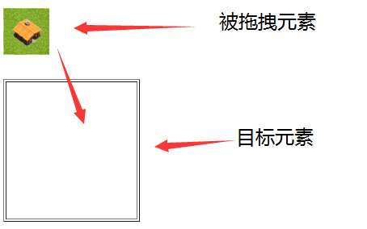
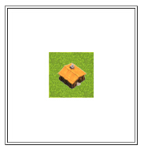
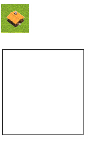

一、HTML新特性
参考自该文章
1. 语义化标签
语义化标签 为页面提供了更好的页面结构。
| 描述 | 属性 |
|---|---|
<header></header> | 定义文档的头部区域 |
<footer></footer> | 定义文档的尾部区域 |
<nav></nav> | 定义文档的导航区域 |
<section></section> | 定义文档的段落 |
<article></article> | 定义页面独立的内容区域 |
<aside></aside> | 定义页面侧边栏内容 |
<command></command> | 定义命令按钮 |
<details></details> | 标签包含 details 元素的标题 |
<dialog></dialog> | 定义对话框 |
2. 增强型表单
HTML5 提供了多个新的表单输入类型。
| 输入类型 | 描述 |
|---|---|
| color | 主要用于选取颜色 |
| date | 从一个日期选择器选择一个日期 |
| datetime | 选择一个日期（UTC 时间） |
| datetime-local | 选择一个日期和时间 (无时区) |
| 包含 e-mail 地址的输入域 | |
| month | 选择一个月份 |
| number | 数值的输入域 |
| range | 一定范围内数字值的输入域 |
| search | 用于搜索域 |
| tel | 定义输入电话号码字段 |
| time | 选择一个时间 |
| url | URL 地址的输入域 |
| week | 选择周和年 |
同时，还增加了新的表单属性：
placehoder 属性，简短的提示在用户输入值前会显示在输入域上。即我们常见的输入框默认提示，在用户输入后消失。
required 属性，是一个 boolean 属性。要求填写的输入域不能为空
pattern 属性，描述了一个正则表达式用于验证
<input>元素的值。min 和 max 属性，设置元素最小值与最大值。
step 属性，为输入域规定合法的数字间隔。
height 和 width 属性，用于 image 类型的
<input>标签的图像高度和宽度。autofocus 属性，是一个 boolean 属性。规定在页面加载时，域自动地获得焦点。
multiple 属性 ，是一个 boolean 属性。规定
<input>元素中可选择多个值。
3. 音频和视频
HTML5 提供了 音频和视频 。
音频：<audio>
1 | <audio controls> |
视频：<video>
1 | <video width="500" height="300" controls> |
4. canvas 绘图
供欣赏的
canvas作品jQuery/HTML5/CSS3资料库
5. SVG 绘图
嵌入和使用SVG:
SVG 与 Canvas两者间的区别
SVG 是一种使用 XML 描述 2D 图形的语言。
Canvas 通过 JavaScript 来绘制 2D 图形。
SVG 基于 XML，这意味着 SVG DOM 中的每个元素都是可用的。您可以为某个元素附加 JavaScript 事件处理器。
在 SVG 中，每个被绘制的图形均被视为对象。如果 SVG 对象的属性发生变化，那么浏览器能够自动重现图形。
Canvas 是逐像素进行渲染的。在 canvas 中，一旦图形被绘制完成，它就不会继续得到浏览器的关注。如果其位置发生变化，那么整个场景也需要重新绘制，包括任何或许已被图形覆盖的对象。
6. 地理定位（Geolocation）
HTML5 Geolocation（地理定位）用于定位用户的位置。
1 | window.navigator.geolocation { |
获取用户定位信息：
1 | navigator.geolocation.getCurrentPosition( |
7. 拖放API
在 HTML5 中，拖放是标准的一部分，任何元素都能够拖放。
转载来自很不错的拖放API解释…
7.1 HTML拖放实例
下面的例子是一个简单的拖放实例：
1 |
|
7.1.1 设置元素为可拖放
首先，为了使元素可拖动，把 draggable 属性设置为 true ：
1 | <img draggable="true" /> |
7.1.2 拖动什么 - ondragstart 和 setData()
然后，规定当元素被拖动时，会发生什么。
在上面的例子中，ondragstart 属性调用了一个函数，drag(event)，它规定了被拖动的数据。
dataTransfer.setData() 方法设置被拖数据的数据类型和值：
1 | function drag(ev){ |
在这个例子中，数据类型是 “Text”，值是可拖动元素的 id (“drag1”)。
7.1.3 放到何处 - ondragover
ondragover 事件规定在何处放置被拖动的数据。
默认地，无法将数据/元素放置到其他元素中。如果需要设置允许放置，我们必须阻止对元素的默认处理方式。
这要通过调用 ondragover 事件的 event.preventDefault() 方法：
1 | event.preventDefault() |
7.1.4 进行放置 - ondrop
当放置被拖数据时，会发生 drop 事件。
在上面的例子中，ondrop 属性调用了一个函数，drop(event)：
1 | function drop(ev) |
- 调用 preventDefault() 来避免浏览器对数据的默认处理（drop 事件的默认行为是以链接形式打开）
- 通过 dataTransfer.getData(“Text”) 方法获得被拖的数据。该方法将返回在 setData() 方法中设置为相同类型的任何数据。
- 被拖数据是被拖元素的 id (“drag1”)
- 把被拖元素追加到放置元素（目标元素）中
7.2 拖放(Drag 和 Drop)各属性生命周期
| 拖动生命周期 | 属性 | 值 | 描述 |
|---|---|---|---|
| 拖动开始 | ondragstart | script | 在拖动操作开始时执行脚本（对象是被拖拽元素） |
| 拖动过程中 | ondrag | script | 只要脚本在被拖动就允许脚本（对象是被拖拽元素） |
| 拖动过程中 | ondragenter | script | 当元素被拖动到一个合法的放置目标时，执行脚本（对象是目标元素） |
| 拖动过程中 | ondragover | script | 只要元素正在合法的放置目标上拖动时，就执行脚本（对象是目标元素） |
| 拖动过程中 | ondragleave | script | 当元素离开合法的放置目标时（对象是目标元素） |
| 拖动结束 | ondrop | script | 将被拖拽元素放在目标元素内时运行脚本（对象是目标元素） |
| 拖动结束 | ondragend | script | 在拖动操作结束时运行脚本（对象是被拖拽元素） |
写在哪呢？
其实参照上表“描述”中括号内的提示即可知道，不过为了能更直观的了解到，特呈上代码：
被拖放元素
1 | <span draggable="true" id="Span1" |
目标元素
1 | <div id="div1" ondrop="fooDrop(this, event)" |
7.3 执行顺序
下面，我将展示将一张图片放入div中的整个script执行过程：
执行元素介绍

执行结果
- 成功将图片拖入div中

1 | onDragStart，当元素被拖动到一个合法的放置目标时，执行脚本（对象是目标元素） |
- 已拖放，可最终未放入div中

1 | onDragStart，当元素被拖动到一个合法的放置目标时，执行脚本（对象是目标元素） |
由上两个执行顺序的Log能看出：
- 只有将“被拖拽元素”放入“目标元素”才会执行“onDrop”属性的方法；
- “onDrag”的事件只要鼠标按住并且拖动就会持续不断的执行；
- “onDragOver”的事件是只要鼠标按住、拖动“被拖拽元素”在“目标元素”上滑过就会持续不断的执行；
- “onDragEnd”的事件无论如何，只要按住的鼠标放开了，就会执行
7.4 深入
一些深入的比如“文件的拖放”、“从浏览器拖放到桌面”以及“从桌面拖放到浏览器”等
7.5 扩展
7.5.1 MIME类型
·text/plain：文本文字
·text/html：HTML文字
·text/xml：XML文字
·text/uri-list：URL列表，每个URL为一行
7.5.2 JS的dataTransfer对象
提供对于预定义的剪贴板格式的访问,以便在拖拽中使用。
| 属性 | 描述 | 参数 |
|---|---|---|
| dropEffect | 设置或返回拖放目标上允许发生的拖放行为和要显示的光标类型 | copy 复制样式被显示link 链接样式被显示move 移动样式被显示none 默认,没有鼠标样式被定义 |
| effectAllowed | 设置或返回被拖动元素允许发生的拖动行为与该对象的源元素。 | copy 选项被复制link 选项被dataTransfer作为link方式保存move 当放置时,对象被移动至目标对象copylink 选项是被复制还是被作为link方式保存关键在于目标对象linkmove 选项是被作为link方式保存还是被移动关键在于目标对象all 所有效果都被支持none 不支持任何效果uninitialized 默认不能通过这个属性传递任何值 |
| types | 存入数据的种类，字符串的伪数组 | |
| clearData() | 清除DataTransfer对象中存放的数据，如果省略参数format，则清楚全部数据 | |
| setData(format,data) | 将指定格式的数据赋值给dataTransfer对象 | 参数format定义数据的格式也就是数据的类型，data为待赋值的数据 |
| getData(format,data) | 从dataTransfer对象中获取指定格式的数据 | format代表数据格式，data为数据。 |
| setDragImage(Element image，long x,long y) | 用img元素来设置拖放图标(部分浏览器中可以用canvas等其他元素来设置) | element设置自定义图标，x设置图标与鼠标在水平方向上的距离，y设置图标与鼠标在垂直方向上的距离。 |
effectAllowed定义了在源对象上的操作,可定义在ondragstart事件中。
dropEffect定义了在目标对象上的操作,可定义在ondrop,ondragenter,ondragover事件中。
effectAllowed可以定义all操作,但是dropEffect可以定义copy操作。
8 Web Storage
使用HTML5可以在本地存储用户的浏览数据。
客户端存储数据的两个对象为：
localStorage ：没有时间限制的数据存储
sessionStorage ： 针对一个 session 的数据存储, 当用户关闭浏览器窗口后，数据会被删除。
不管是 localStorage，还是 sessionStorage，可使用的API都相同，常用的有如下几个（以localStorage为例）：
1、保存数据：localStorage.setItem(key,value);
2、读取数据：localStorage.getItem(key);
3、删除单个数据：localStorage.removeItem(key);
4、删除所有数据：localStorage.clear();
5、得到某个索引的key：localStorage.key(index);
9. WebSocket
可参考 阮一峰日志 深入学习
其中用到的演示平台
jsbin.com以及其使用教程
WebSocket 是HTML5开始提供的一种在单个 TCP 连接上进行全双工通讯的协议。
RS-422标准就是全双工通信标准。全双工（Full Duplex）是 在微处理器与外围设备之间采用发送线和接受线各自独立的方法，可以使数据在两个方向上同时进行传送操作。指在发送数据的同时也能够接收数据，两者同步进行，这好像我们平时打电话一样，说话的同时也能够听到对方的声音。网卡一般都支持全双工。
全双工以太网使用两条电缆线，而不是像半双工方式那样使用一对电缆线。全双工方式在发送设备的发送方和接收设备的接收方之间采取点到点的连接，这意味着在全双工的传送方式下，可以得到更高的数据传输速度。
在WebSocket22通过 send() 方法来向服务器发送数据，并通过 onmessage 事件来接收服务器返回的数据。
1 |
|
二、浏览器标准模式和怪异模式
转自简书
标准模式和怪异模式的来由
在HTML与CSS的标准化未完成之前，各个浏览器对于HTML和CSS的解析有各自不同的实现，而有很多旧的网页都是按照这些非标准的实现去设计的。在HTML与CSS标准确定之后，浏览器一方面要按照标准去实现对HTML与CSS的支持，另一方面又要保证对非标准的旧网页设计的后向兼容性。因此，现代的浏览器一般都有两种渲染模式：标准模式和怪异模式。在标准模式下，浏览器按照HTML与CSS标准对文档进行解析和渲染；而在怪异模式下，浏览器则按照旧有的非标准的实现方式对文档进行解析和渲染。这样的话，对于旧有的网页，浏览器启动怪异模式，就能够使得旧网页正常显示；对于新的网页，则可以启动标准模式，使得新网页能够使用HTML与CSS的标准特性。
浏览器如何确定使用哪种渲染模式
知道了这两种渲染模式的来由，那剩下的问题就是浏览器如何能够确定应该使用哪种模式了。其实归根结底就是，浏览器如何能将旧网页与新网页区分开来。
平常编写网页的时候，一般都会见到HTML文档的头部会有文档类型声明：DOCTYPE。当浏览器遇到正确的文档声明时，浏览器就会启动标准模式，按照制定的文档类型标准解析和渲染文档。而对于旧有的网页，由于网页编写的当时标准还没有确定，所以一般是不会有文档类型声明的。所以，对于没有文档类型声明或者文档类型声明不正确的文档，浏览器就会认为它是一个旧的HTML文档，就会使用怪异模式解析和渲染该文档。关于DOCTYPE的更详细说明，请戳这里 DOCTYPE声明作用及用法详解。
标准模式与怪异模式的两个常见区别
- 盒模型的处理差异：标准CSS盒模型的宽度和高度等于内容区的高度和宽度，不包含内边距和边框，而IE6之前的浏览器实现的盒模型的宽高计算方式是包含内边距和边框的。因此，对于IE，怪异模式和标准模式下的盒模型宽高计算方式是不一样的；
- 行内元素的垂直对齐：很多早期的浏览器对齐图片至包含它们的盒子的下边框，虽然CSS的规范要求它们被对齐至盒内文本的基线。标准模式下，基于Gecko的浏览器将会对齐至基线，而在quirks模式下它们会对齐至底部。最直接的例子就是图片的显示。在标准模式下，图片并不是与父元素的下边框对齐的，如果仔细观察，你会发现图片与父元素下边框之间存在一点小空隙。那是因为标准模式下，图片是基线对齐的。而怪异模式下，则不存在这个问题。具体请看这篇文章 CSS深入理解vertical-align和line-height的基友关系。
三、HTML与XHTML的区别
HTML(文本标记语言)是英文HyperText Markup Language的简称，用于创建网页的标准标记语言，html并不是编程语言，HTML 运行在浏览器上由浏览器来解析翻译给网站访客，它是建设网站的基础。Html5代表了下一代html的发展，html5功能已经很强大。
XHTML(可扩展标识语言)是The Extensible Markup Language的简写,XHTML 1.0在2000年1月26日成为W3C的推荐标准。XHTML1.0是源自W3C的最新的HTML标准，是Web的语言，是M站软件幵发必不可少的Web构件之一，每一个Web开发者都需要对它熟练掌握。
功能区别：
- HTML对于各大浏览器兼容性较差(pc端浏览器、手机端浏览器、PAD)，对于网页页面编写技巧要求比较高，现在web前端开发的静态网页，一般都是html4.0，HTML5就另当别论了。
- XHTML可以很好处理各大浏览器的兼容(pc端浏览器、手机端浏览器、PAD)，看起来与HTML有些相象但是和HTML有不少的区别，XHTML的语法较为严谨，习惯松散结构的HTML编写者刚开始接触XHTML有些不习惯。XHTML结合了部分XML的强大功能及大多数HTML的简单特性。
书写习惯区别
- HTML标签不区分大小写XHTML所有标签都必须小写。
- XHTML标签必须成双成对.
- html对标签顺序要求不严格，XHTML标签顺序必须正确
四、使用data-*
- data-* 属性用于存储页面或应用程序的私有自定义数据。
- data-* 属性赋予我们在所有 HTML 元素上嵌入自定义 data 属性的能力。
- 存储的（自定义）数据能够被页面的 JavaScript 中利用，以创建更好的用户体验（不进行 Ajax 调用或服务器端数据库查询）。
data-* 属性包括两部分：
语法 <*element* data-*=”*somevalue*”>
- 属性名不应该包含任何大写字母，并且在前缀 “data-“ 之后必须有至少一个字符
- 属性值可以是任意字符串
注释：用户代理会完全忽略前缀为 “data-“ 的自定义属性。
Example:
1 |
|
优势
- 自定义属性，可以被js很好的操作
- H5的新属性
- 通过js的element.dataset.或jQuery的data(‘‘)拿到，*可以为url等字符
- 框架的数据绑定，例如
data-ng-if="cs==1"
使用
data-toggle 这种以 data- 开头的格式放在元素上表示元素携带的数据，如：
1 | <``img` `id``=``"img"` `src``=``"small.jpg"` `data-bigimg``=``"big.jpg"` `/> |
JQuery的 data() 方法可以直接操作，如：
1 | //获取：``var` `bigImage = $(``"#img"``).data(``"bigimg"``);``//注意，这里不用加 data- |
用这种 $("[data-bigimg]") 的方式可以选择所有具有 data-bigimg 这个属性的元素。
也可以直接通过$("#img").attr("data-bigimg"); 来获取和设置
五、HTML模板引擎
模板引擎（这里特指用于Web开发的模板引擎）是为了使用户界面与业务数据（内容）分离而产生的，它可以生成特定格式的文档，用于网站的模板引擎就会生成一个标准的HTML文档。
其他待补充